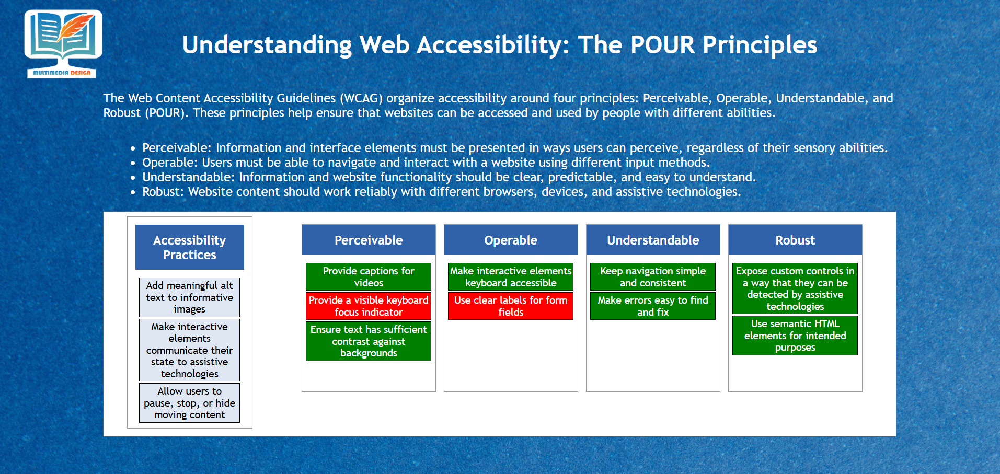
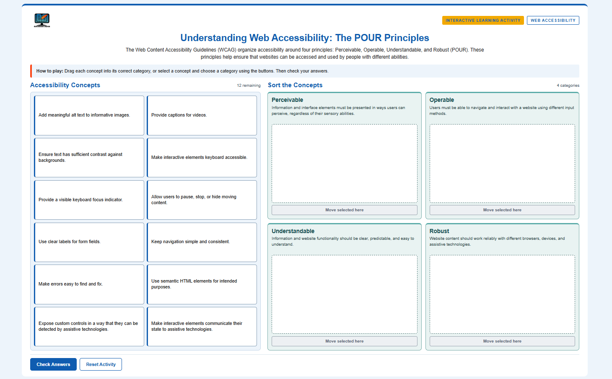
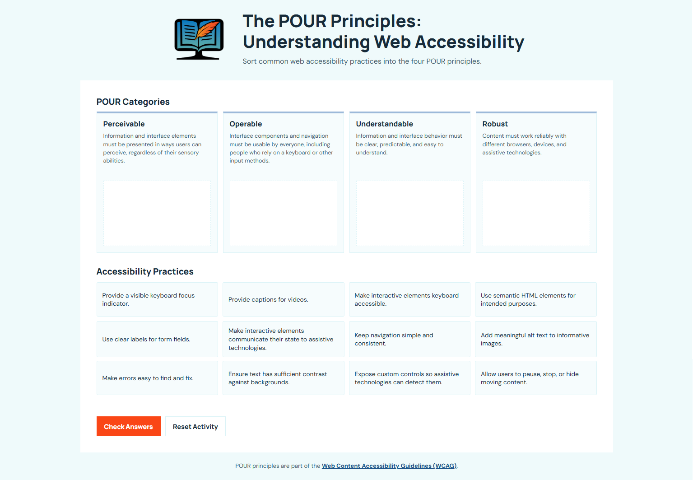

Academic Project · Interactive Learning
POUR Drag-and-Drop Activity
This assignment explored two approaches to creating an interactive, web-based drag-and-drop assessment: modifying an existing code template and using generative AI to build the activity. The goal was to create a standalone practice exercise in which learners drag concepts into relevant categories and receive immediate visual feedback when an answer is correct or incorrect.
Original Project
This project was a comparison of traditional and AI-assisted development approaches for an interactive drag-and-drop activity.
For my version of the assignment, I focused on the four WCAG accessibility principles: Perceivable, Operable, Understandable, and Robust (POUR). Both versions use twelve website accessibility concepts that learners sort into the four categories.
Traditional Version

I downloaded and extracted the source-code template, then opened the folder in VS Code. I changed the HTML to include my own title, introduction, category headings, and draggable list items based on the POUR principles. I also added descriptions of the principles for users who might be unfamiliar with them and expanded the original activity to include a fourth category.
Next, I customized the CSS. I changed the background, colors, typography, and logo placement, then resized the drag-and-drop container and adjusted margins and padding to improve the alignment. Because my list items contained longer descriptions than the original examples, I also had to change the text boxes to accommodate their content. I tested and adjusted the layout throughout the process before uploading the files to GitHub and publishing the activity with GitHub Pages.
AI-Generated Version

For the AI version, I used an AI assistant to generate the HTML, CSS, and JavaScript. The process was much faster and required less coding knowledge. I did not edit the code directly; I copied the generated code from the chat and pasted it into my file structure in VS Code, then tested the activity and used the AI assistant to troubleshoot issues.
Although the AI-generated activity contained the same information, I found the visual design significantly more overwhelming. It was very busy and included too many extraneous visual elements that distracted from the activity itself. The colors did not create a clear visual path or guide the user's attention through the page. The overall style also felt similar to the AI-generated presentations I frequently see in my office. The traditionally developed version had a clearer separation between the instructions and the activity, making it easier to understand visually.
AI also generated accessibility improvements in response to a single prompt, which appeared to bring the page closer to WCAG AA standards. I did not run the result through an accessibility checker, however, so I cannot confirm that it meets those standards.
Reflection
The biggest difference between the two approaches was how much interaction I personally had with the code. With traditional methods, I edited the code piece by piece, changing specific lines as I went. With generative AI, the process was much faster, but I did not work directly with the code. The underlying files and structures were similar, though the specific contents, especially in the CSS, differed.
My overall experience with traditional development was more engaging and educational. I learned more by testing visual changes and adjusting margins, padding, and element sizes myself. With AI, I did not learn new coding skills; I mostly copied and pasted code and uploaded it to GitHub. I preferred the traditional approach both because it was more educational and because I liked the result better.
I think the best solution would be to develop the activity using traditional methods and then use AI to help improve its accessibility. This keeps the designer's judgment and understanding of the objective at the forefront while still benefiting from AI's ability to generate or edit large sections of code quickly.

Redesigned Version
For my portfolio, I revisited the traditionally developed activity and refined its visual design. I updated the layout, typography, colors, and logo placement to create a more cohesive presentation while retaining the original purpose and drag-and-drop functionality.
The redesign builds on the clearer structure of the traditional version, keeping the instructions and activity easy to distinguish while reducing visual distractions. It also incorporates accessibility features from the AI-generated version that were missing from the original template. From a user experience perspective, the redesign combines the strengths of both approaches: the visual clarity of the traditional version and the accessibility features of the AI version.